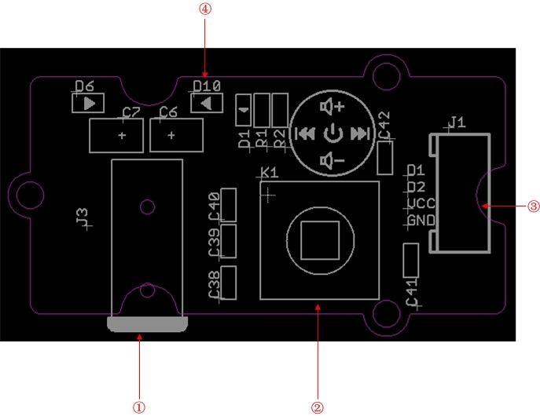
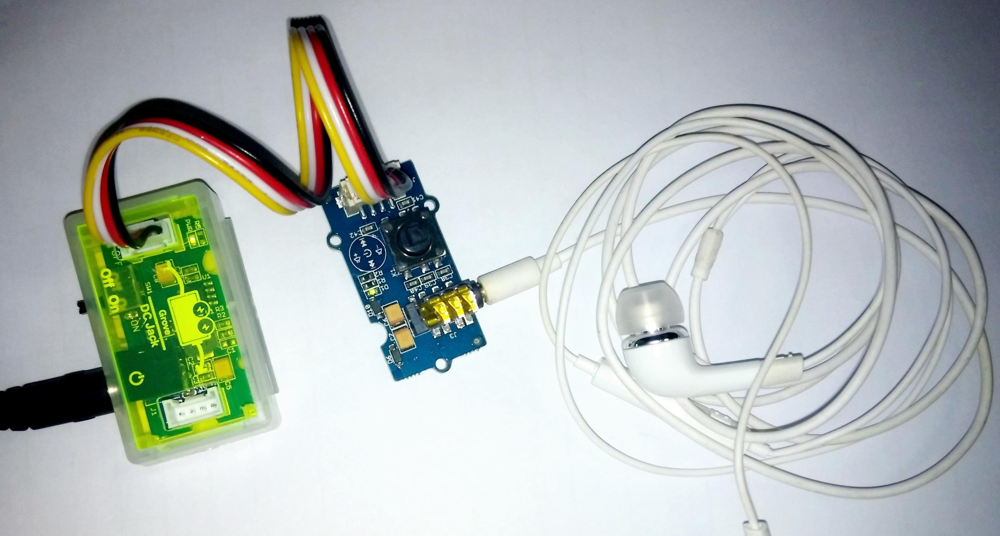

Grove - FM Receiver
Grove - FM Receiver is a wideband FM receiver module, this module is base on SX6119, it can offers true single-chip voice FM receiver, which is built-in amplifier, VCO, filter and demodulator. The multifunction button provides greater convenience for users to control.
Features
- Grove interface
- FM receiver with a tuning range of 64 MHz to 108 MHz covering Eastern Europe (OIRT), Japan, Europe and US bands
- Lower power consumption
- Multifunction button
- LED Indicator
- Headsets interface
Interface Function

- ①：Headsets interface:It can drive 16 ohm or 32 ohm earphone or audio。
- ②：Multifunction button ：Change volume and select channel
- Center：Open FM/Close FM（Keeping press 1S）
- Up：volume add
- Down：volume sub
- Left：searching down
- Right：searching up
- ③：Grove Interface
- ④：LED Indicator
- FM Close：LED off
- FM Open：LED light
- FM Searching：LED flash
Usage
- 1） Part lists：Grove - USB Power, Grove - FM Receiver, Mini Cable, Audio

Resource
Grove - FM Receiver Eagle File
Schematic in pdf
Datasheet of SX6119
Copyright (c) 2008-2016 Seeed Development Limited (
www.seeedstudio.com /
www.seeed.cc)
This static html page was created from http://www.seeedstudio.com/wiki